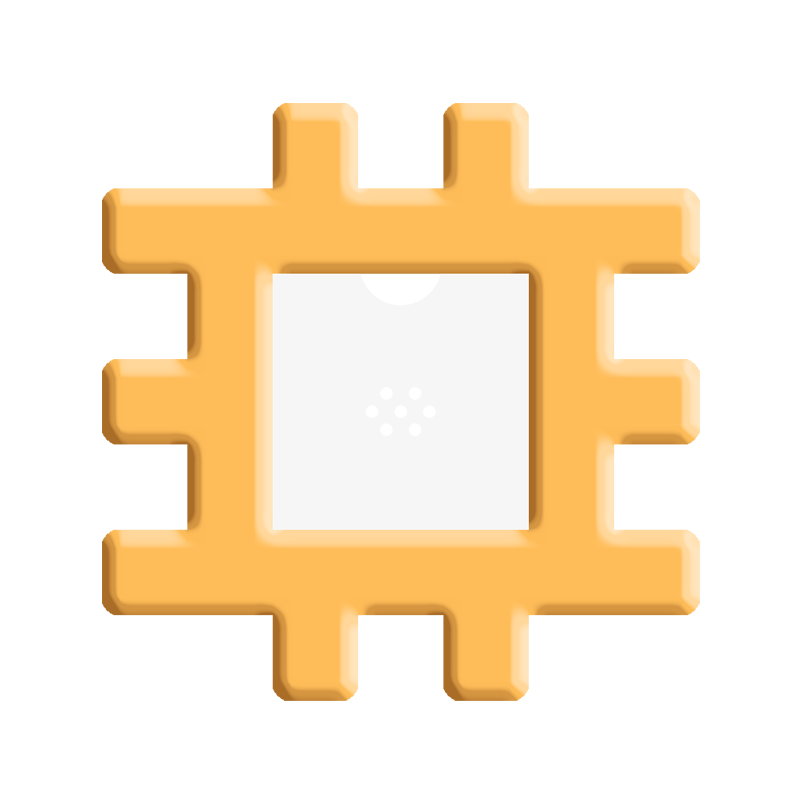

도킹이 전해드려요
| 바닥형
|
오픈형  |
반 오픈형
|
3가지 형태의 도킹블록
도킹블록은 소형(15cm), 대형(30cm) 두 사이즈 입니다.
바닥형 블록은 반려동물이 안전하게 블록 위에서 놀이할 수 있도록 제작되었습니다.
오픈형 블록은 양쪽 면이 뚫려있어 투명 아크릴 판을 양쪽 면에 끼울 수 있습니다.
반 오픈형 블록은 한쪽 면이 뚫려있어 한쪽에 투명 아크릴 판을 끼울 수 있습니다.
| 자연 요소 |
자연 요소들
꽃, 잔디, 흙, 돌, 간식들을 제공합니다.
자연적 요소들과 사료, 간식을 천주머니에 넣어 블록에 설치할 수 있습니다.
이 요소들은 보호자가 쉽게 교체할 수 있습니다.